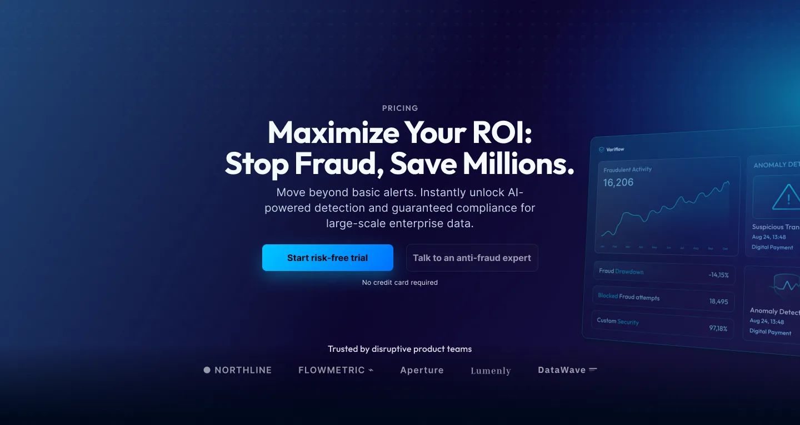
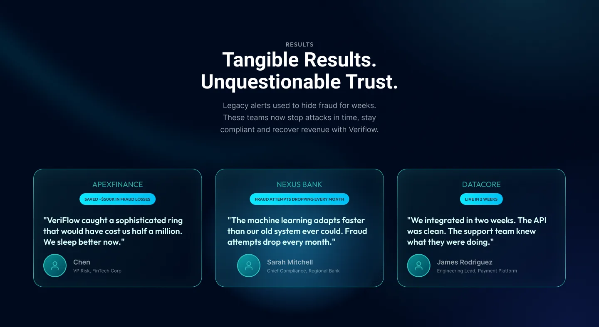

A pricing page that answers before it lists
SaaS pricing pages typically put the user in comparison mode: three plan names, a feature checklist, a badge that says "Most Popular." The user has to figure out where they fit by reading. The design problem is upstream: the page never answers the question users actually arrive with: which plan is for me?

Standard SaaS pricing · the pattern this addresses
High-intent traffic arrives with one question. The standard page answers it with a feature list, which means the user has to answer it themselves.
The problem
Pricing pages carry the highest-intent traffic on any SaaS product. A user who gets there has already decided they want the product. The only question left is which plan fits them.
Feature lists put the user in comparison mode. They have to cross-reference what they need against what each plan includes: two parallel models that have to intersect before a decision is possible.
The problem isn't the feature list itself. It's that feature lists are the first thing the user encounters. The structural fix is to answer "who is this for" before "what does it include." Once the user can locate themselves, the features become confirmation rather than the decision mechanism.
Plan structure
Each plan label describes who it's for, not what it includes. A user who recognizes themselves in a label doesn't need to read the feature list to know they're in the right place. The grid is designed for someone arriving uncertain: the label answers the question, the features confirm the answer.
Feature-first
Plan names: Basic · Pro · Enterprise. User reads feature checkmarks to understand the difference. Two lists, one decision: the user does all the work.
Audience-first
Plan names describe who: "For solo operators" · "For growing teams" · "For complex orgs." User recognizes themselves before reading a feature. One recognition, one decision.
One tier is highlighted as recommended, but not aggressively. The hierarchy signals a preference without removing the choice. The layout answers the who before the what, so the user who already knows where they fit can skip straight to the features they care about.

Making the cost of inaction visible
Below the plans, the page shifts register: from "here's what you get" to "here's what staying put costs." The numbers are specific: compliance risk, hours lost, overhead. Generic benefit claims don't move someone who's already looked at pricing. Concrete figures assigned to recognizable problems do.
A user who can calculate the cost of their current situation against the plan price has everything they need to decide. The visualization doesn't argue for the product: it quantifies the alternative.
The goal was to make inaction feel like the expensive choice, achieved through specificity rather than urgency or pressure. Users default to their current state when the cost of changing feels higher than the cost of staying. Making that cost visible is a conversion lever that doesn't require dark patterns.

Social proof after the decision
The testimonials sit below the pricing grid, not above it. Social proof placed before the plans is pitch: it tries to create intent that may not be there. Social proof placed after is confirmation: it validates a decision the user has already formed. By the time they reach the quotes, they've seen the plans and the cost data. The quotes are there to close, not to sell.
Each quote names a specific result rather than a general feeling. "Great product" reinforces the product's existence. "Cut time-to-close by 30%" reinforces the user's decision to sign up.

Closing
The FAQ covers objections that actually stop signups: billing terms, cancellation, migration complexity. Objections that aren't addressed on the page become reasons to close the tab without converting. Every unanswered question at this point in the flow has the same cost: a lost signup.
The footer is minimal by design. Once a user reaches the bottom of a pricing page, adding choices increases the probability of no action. The only meaningful next step at this point is signing up. Everything else is noise.
Reflections
Status quo is the pricing page's real competitor. Every pricing page design assumes the visitor is comparing plans. The harder problem is that most visitors are deciding whether to change anything at all. The cost-of-inaction framing in s03 addresses this, but I'd push it earlier, to the hero, not leave it as a supporting section a third of the way down.
I don't know whether the dark mode or the copy is doing the conversion work. The visual language signals premium before a single word is read. In a real engagement, I'd want a light-mode version of the same copy structure to isolate what's actually driving the behavior.
The comparison table is built for buyers who have already decided. Feature-by-feature comparisons serve the 20% who are upgrading from a plan they know. The 80% evaluating the product for the first time need a simpler entry frame. I'd test surfacing a single recommended plan before the full comparison grid appears.
Let's talk
Got a project?
Let's make it work.